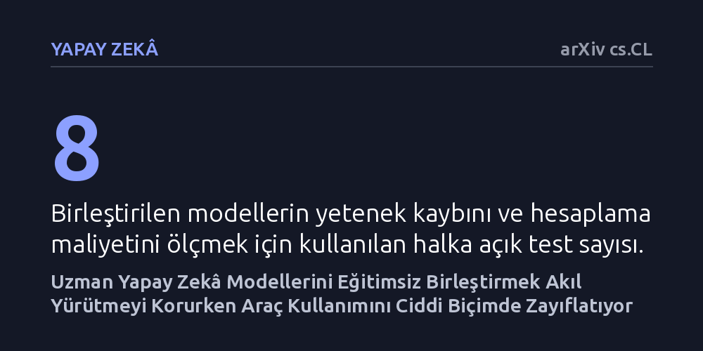

YAPAY-ZEKA · arXiv cs.CL · 2026-10-25
Araştırmacılar, farklı alanlarda uzmanlaşmış büyük dil modellerini tek bir modelde birleştiren yöntemlerin becerileri ve işlem maliyetini nasıl etkilediğini FusionEval kıyaslama paketiyle inceledi. Sonuçlar, ek eğitim gerektirmeyen birleştirme yöntemlerinin akıl yürütmeyi koruduğunu ancak dış araç kullanımını ciddi ölçüde zayıflattığını gösterdi.
Genel ortalama başarıya odaklanmak, birleştirilen yapay zekâ modellerinin araç kullanma gibi kritik yeteneklerini sessizce kaybettiğini gözden kaçırmamıza yol açabilir.

Günümüzde yapay zekâ modelleri matematik problemlerini çözmekten kod yazmaya, bilimsel metinleri analiz etmekten harici yazılım araçlarını çalıştırmaya kadar pek çok özel alanda ayrı ayrı eğitilebiliyor. Ancak her görev için devasa boyutlarda bağımsız bir model çalıştırmak hem donanım kaynaklarını tüketiyor hem de pratik uygulamalarda ciddi bir verimsizlik yaratıyor. Bu nedenle araştırmacılar, farklı alanların uzmanı olan modellerin parametrelerini kaynaştırarak her işi yapabilen tek bir model elde etmeye, yani model birleştirmeye yöneliyor.
Ne var ki birleştirilmiş modellerin performansını ölçmek sanıldığı kadar basit değil. Mevcut değerlendirme yöntemleri genellikle yüzeysel ortalama puanlara bakıyor ve uzun akıl yürütme süreçleri ile dış araç kullanımını yeterince sınamıyor. Daha da kötüsü, yüksek bir genel ortalama puan, birleştirme sırasında uzman modellerden birinin hayati bir yeteneğini neredeyse tamamen yitirdiği gerçeğini maskeleyebiliyor. Ortada duran temel soru, bu birleştirmenin hangi yetenekleri sessizce feda ettiğini ve sürecin ne kadarlık bir donanım faturası çıkardığını netleştirmekti.
Araştırmacılar bu belirsizliği gidermek amacıyla FusionEval adını verdikleri kapsamlı bir değerlendirme paketi geliştirdi. Deney düzeneğinde rastgele modelleri karşılaştırmak yerine, aynı kökten gelen kontrollü bir yapı kuruldu. Açık kaynaklı Qwen3 ve Llama temel modelleri alınarak; matematik, yazılım kodu, fen bilimleri, talimat takibi ve harici araç kullanımı olmak üzere beş temel alanda bağımsız uzmanlar eğitildi.
Oluşturulan bu uzman modeller, hem ek bir eğitime ihtiyaç duymayan doğrudan ağırlık birleştirme yöntemleriyle hem de ek eğitim gerektiren ileri tekniklerle kaynaştırıldı. Ortaya çıkan birleşik modeller sekiz farklı halka açık kıyaslama testinde sınandı. Yalnızca başarı puanları değil; modellerin en kötü performans gösterdiği alanlar, çalışma süreleri ve ekran kartı bellek tüketimleri de aynı veri erişim kuralları altında titizlikle kaydedildi.
Deneylerin ortaya koyduğu en somut bulgu, ek eğitim gerektirmeyen pratik birleştirme yöntemlerinin akıl yürütme performansını korumayı başarması, ancak dış araç kullanma yeteneğini her iki model ailesinde de belirgin biçimde zayıflatması oldu. Başka bir deyişle, modeller karmaşık problemleri adım adım düşünmeye devam edebilse de, bir hesap makinesini veya harici bir veritabanı arayüzünü çağırma becerilerini birleştirme esnasında büyük ölçüde kaybetti.
Buna karşılık MOPD gibi ek eğitim içeren yöntemler araç kullanma kabiliyetini korumayı başardı ve yetenekler arasında daha dengeli bir profil sergiledi. Ancak bu dengenin ciddi bir bedeli vardı: MOPD yöntemi ek veri hazırlığı, ilave model çıkarımı ve yeni bir eğitim süreci gerektirerek hesaplama maliyetini kayda değer oranda artırdı. Sonuçlar, düşük hesaplama maliyetiyle akıl yürütme, talimat uyumu ve araç kullanımını aynı anda korumanın hâlâ çözülememiş bir güçlük olduğunu gösterdi.
Bu çalışma, yapay zekâ modellerini birleştirirken yalnızca genel ortalama skorlara güvenmenin yanıltıcı olacağını açıkça gösteriyor. Bir modelin ortalama skoru yüksek görünse bile, sisteme entegre harici araçları çalıştırma refleksinin bozulmuş olması, gerçek dünya uygulamalarında sistemin tamamen işlevsiz kalmasına yol açabilir. Mühendislerin ve araştırmacıların birleştirme tekniklerini seçerken bu tür gizli yetenek erozyonlarını hesaba katması gerekiyor.
Öte yandan, araç kullanımını koruyan yöntemlerin gerektirdiği yüksek donanım ve eğitim maliyetleri, uzman modelleri bir araya getirmenin zahmetsiz bir kestirme yol olmadığını hatırlatıyor. Gelecekteki araştırmaların, ek eğitim yükü getirmeden tüm yetenekleri dengeli biçimde koruyabilen daha verimli ağırlık birleştirme algoritmalarına odaklanması gerekecek.